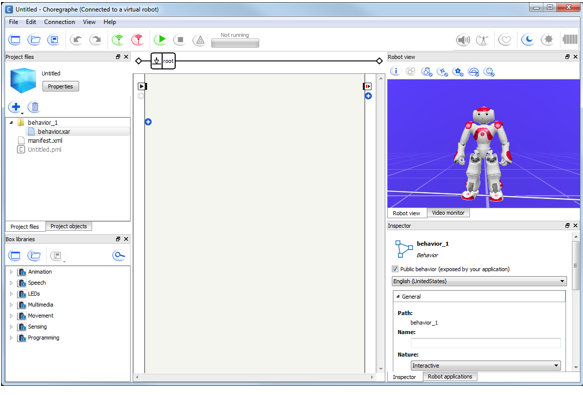
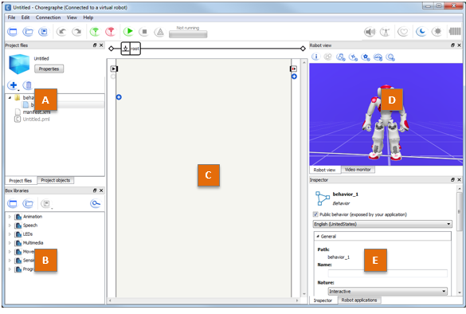
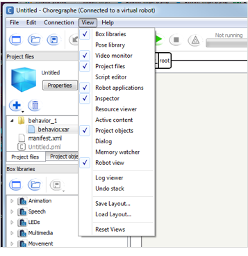
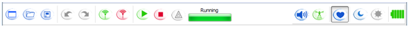
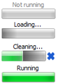

Menus, Panels and Toolbar in a glance¶
Main window¶
At startup, the following interface is displayed.
{kind=link}
This interface contains a Menu Bar, a Toolbar and several Panels.
Panels¶
By default, the following panels are displayed:
{kind=link}
| Part | Name | Part | Name |
|---|---|---|---|
| A | D | ||
| B | Box libraries panel | E | |
| C | Flow diagram panel |
You can find more advanced panels in the View menu:
{kind=link}
| Pose library panel | Dialog panel |
| Script editor panel | Memory watcher panel |
| Resource viewer panel | Log viewer |
| Active Content panel | Undo stack panel |
To create and save your own layout, see: Choregraphe layout.
Toolbar¶
{kind=link}
These buttons are shortcuts to actions you will often need while creating behaviors. Note that keyboard shortcuts are also available.
| Button(s) | Function |
|---|---|
| Create a New project, Open or Save a Project. | |

|
Undo and Redo last actions made in the diagram. |
Connect, Disconnect or Try to reconnect your Aldebaran robot. For further details, see: Connecting Choregraphe to a robot. |
|
| Play or Stop the current Behavior. | |
| See the warnings and the errors that can occurs during the execution of your behavior. | |
|  | When you click the Play button, the Progress bar, shows the status of the Behavior loading. It can be:
|
| Enables you to set the volume of NAO’s speakers. | |
Activate / deactivate the Animation Mode which enables you to easily manipulate your Aldebaran robot and store its position. For further details, see: Getting started with the Animation Mode. This button can be:
|
|


|
Turns on and off the Autonomous Life on the robot. For further details, see: ALAutonomousLife. If you play a Behavior while the Autonomous Life is turned on,
Choregraphe plays it using
|
Rest button. Sets the Stiffness off. If your Aldebaran robot is standing, before setting the Stiffness off, he goes to the Crouch posture. |
|

|
Wake Up button. Sets the Stiffness on. Additionally, if your Aldebaran robot is crouched, he also goes to the StandInit posture. Warning Do not touch your Aldebaran robot during a wake up; or the Active diagnosis may return false positive results. |
Indicate the level of battery of the connected Aldebaran robot. This indicator can be:
|